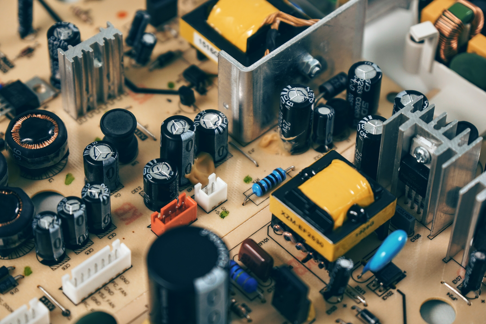

Wireless Sensor Networks
Recent advancements in chip design have given birth to devices that have a considerable smaller energy footprint. Currently, a huge number of sensors are available that can operate for a long time on a limited battery resource. This property of a low energy footprint of sensor makes them a great candidate for using them for autonomous monitoring. Acquiring data individually from sensors can be a cumbersome task. To solve this problem of data collection, Wireless sensor networks come into play. In a Wireless Sensor Network, multiple sensor nodes that are spatially distributed form a wireless network. These nodes, as their name suggests, contain multiple sensors. With the help of these sensor they gather the required data and then send them over to the data collection node.
When multiple Sensor nodes connect together to form a network, the complete network is referred to as a wireless sensor network.
How do wireless sensor networks operate?
Just like internet networks can be connected in form of various topologies, sensor netwroks also connect with each other in form of a certain topology. Some examples of topologies are:
The number of nodes contained by a single network vary on the utility of the whole sensor network. A network may comprise of a few to as many as thousand nodes. Due to their low energy footprint, these nodes (depending upon the energy consumption) are capable of working for a very long time. This also enables them to be deployed in areas that are hard to reach, enabling data collection for a longer period of time with minimal human interaction.
About Our System
Composition of the system:
Structure of Sending Nodes
Sink Node
All the data from the Nodes are collected with the help of a sink node which also displays all the data with the help of a local web based application. The sink is also capable of sending data to a remote server which allows the data to be accessed from anywhere in the world.Communication strategy within Nodes
In order for the motes to send data wirelessly to the collecting node, there are is a RF transceiver on the mote. The motes work on 433Mhz which enables long distance communication enabling the sink to located in locations where internet connectivity is available without compromising on data loss. The Sensing motes are connected to the sink node using the simple star topology